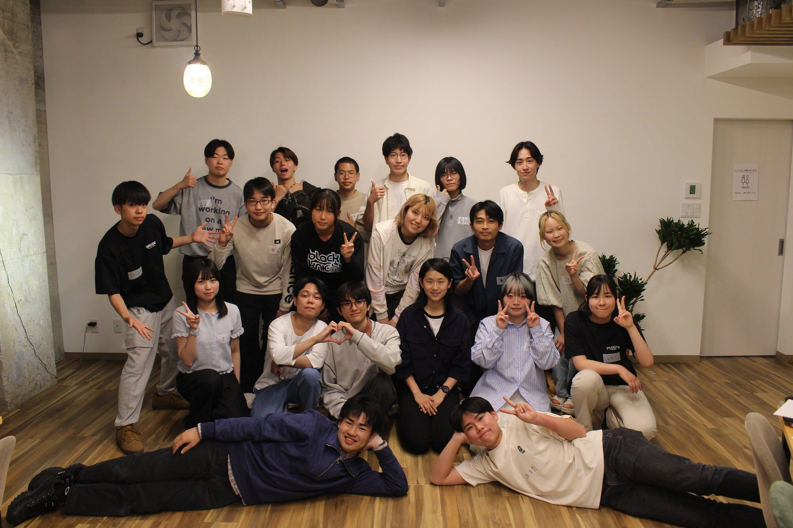
2026年5月10日（日）、徳島市籠屋町の「cocoatta」にて、立食交流会「よいしょ！徳島」第1回を開催いたしました。本イベントは、「書いて、破って、話す」をリズムに据えた体験型の立食交流会で、徳島の食材を最高の状態で味わいながら、普段の役割を一度脱ぎ捨て、一人ひとりが本来やりたいこと・在りたい姿を語り合う場として企画したものです。
中学生から社会人まで、神山まるごと高専・徳島文理高校・鳥取城北高校・立命館宇治中・四国大学・徳島大学などから22名が事前申込し、当日は徳島県内外から多様なバックグラウンドを持つ参加者が集まりました。
「よいしょ！」の掛け声で乾杯し、阿波尾鶏を熱々のうちに頬張るところから会はスタートしました。会の中盤では、世間体や「いい子ちゃん」など、自分を縛っている言葉を付箋に書き出して全員で一斉に破る厄落としワーク「ドリームシュレッダー」を実施。続いて、「〇〇をしたい（Do）」ではなく「〇〇な状態で在りたい（Be）」を名刺サイズのカードに書き、首から下げて互いの「在り方」を見せ合う「ドリームシート」へ。ワークの後はそのカードを起点に深いフリートークが続き、定刻ぎりぎりまで会話が止まりませんでした。
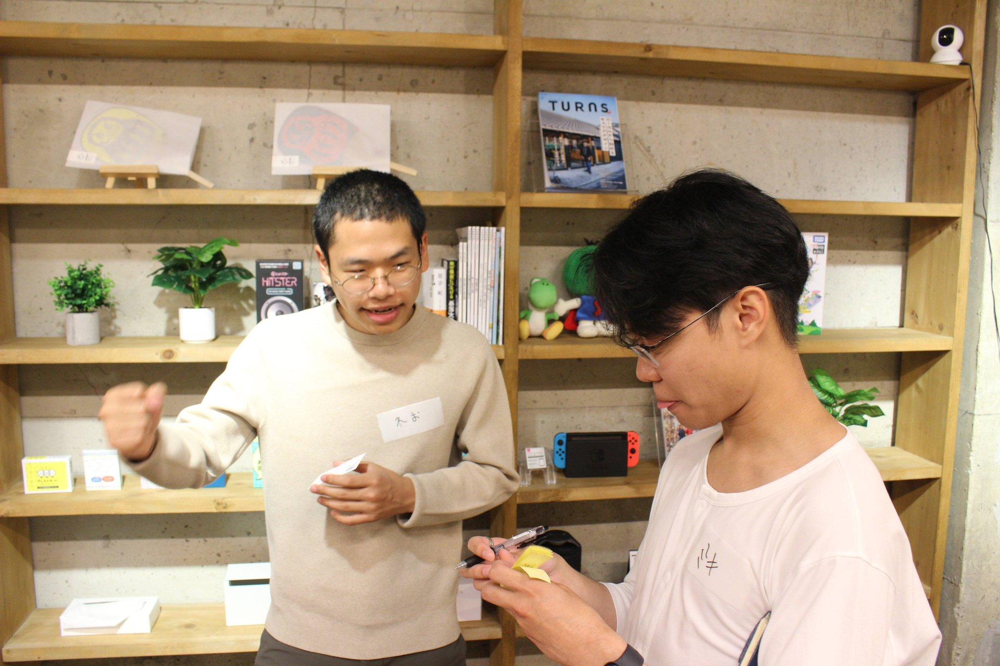
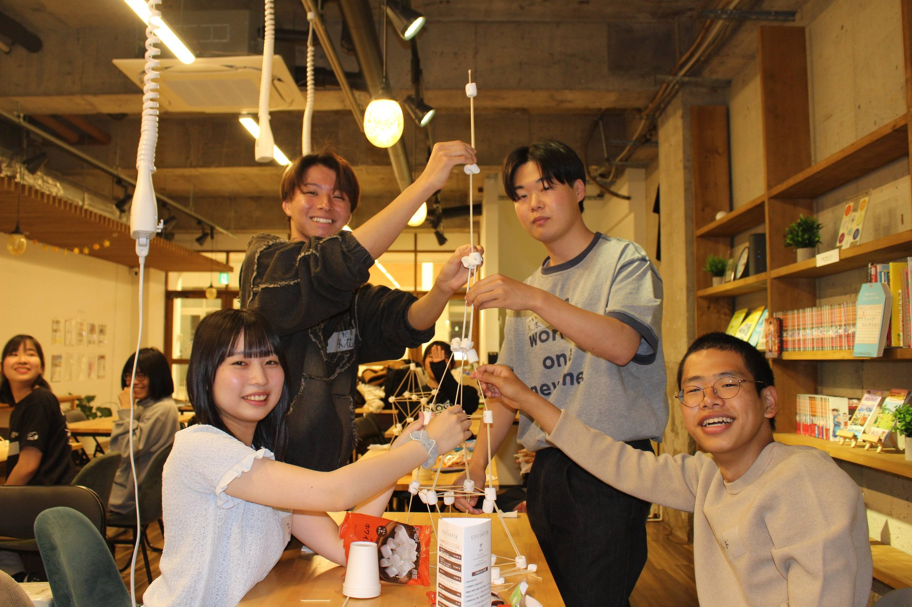
9点以上をつけた参加者：14名中12名／「もう一度参加したい」が満点（5）の回答が大半を占め、推奨度も極めて高い水準となりました。
「夢をかいたとき。自分が今まで人に夢を見せるのが怖かったなってことに気づきました。」（高校2年生／神山まるごと高専）
「自分の夢を描いた紙をみんなで破った瞬間が一番印象に残った。いろんな方の話を聞く会に参加してみたい。」（高校3年生／徳島文理高校）
「実現可能性を度外視した夢を語れたのが良かった。もっと、いろんな人と話してみたいと思いました。」（高校3年生／神山まるごと高専）
「フリートークでフィリピンの方と話したこと、マシュマロタワーのアイスブレイクが印象的。1on1の実施や任意団体のメンバー募集を始めたい。」（中学生）
「行動してみようと思ったこと」の自由記述では、1on1の実施、任意団体のメンバー募集、海外（バングラデシュ等）への挑戦、国際交流の推進、「1人でも行動できる勇気を持つ」など、具体的な次の一歩につながる回答が多く挙がりました。
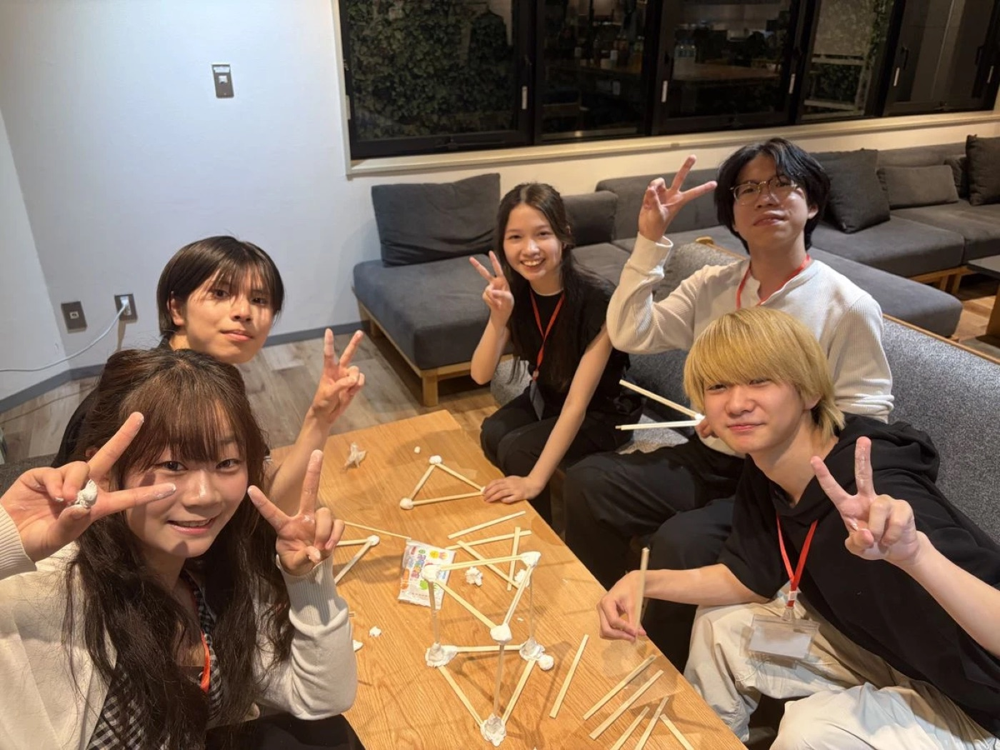
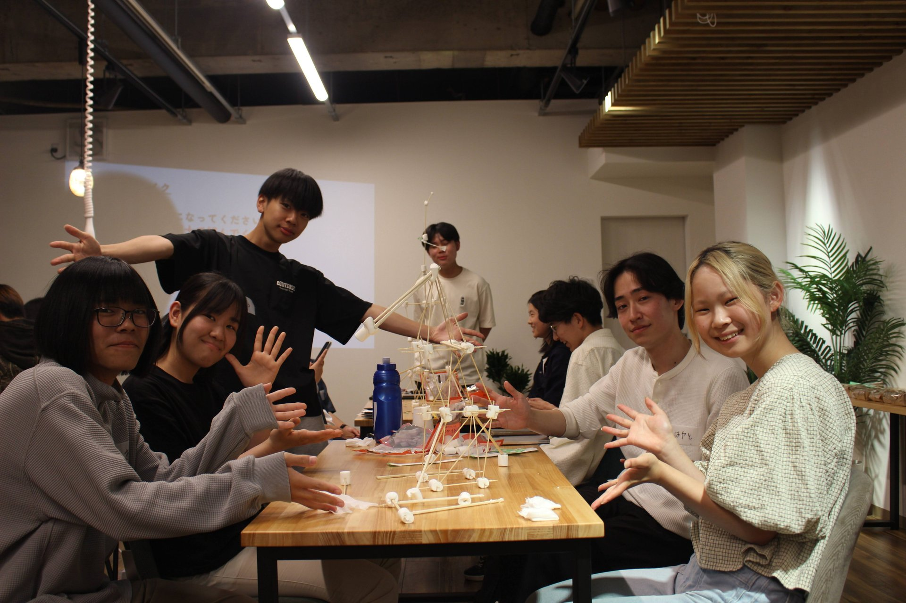
「もっと話す時間が欲しかった」「1日近く使う／宿泊型でも価値がありそう」「席のスイッチがあると良い」「団体運営者同士で活動を紹介し合う企画が欲しい」「経営者や大学生ともっと話したい」など、第2回以降に活かせる具体的な改善・拡張アイデアも多数寄せられました。
NEXYは「学生のやりたいをひとりにしない」をコンセプトに、徳島をはじめとした地方の各拠点で、世代・地域・所属を越えて挑戦する学生たちが出会い、互いの「在り方」を共有できる場を継続的に展開してまいります。第2回「よいしょ！徳島」は今夏の開催を予定しており、続報は本ニュース・各SNSにて順次お知らせいたします。
第1回の開催にあたり、ご参加・ご協力いただいた皆さま、会場をご提供いただいた cocoatta 様に、心より御礼申し上げます。
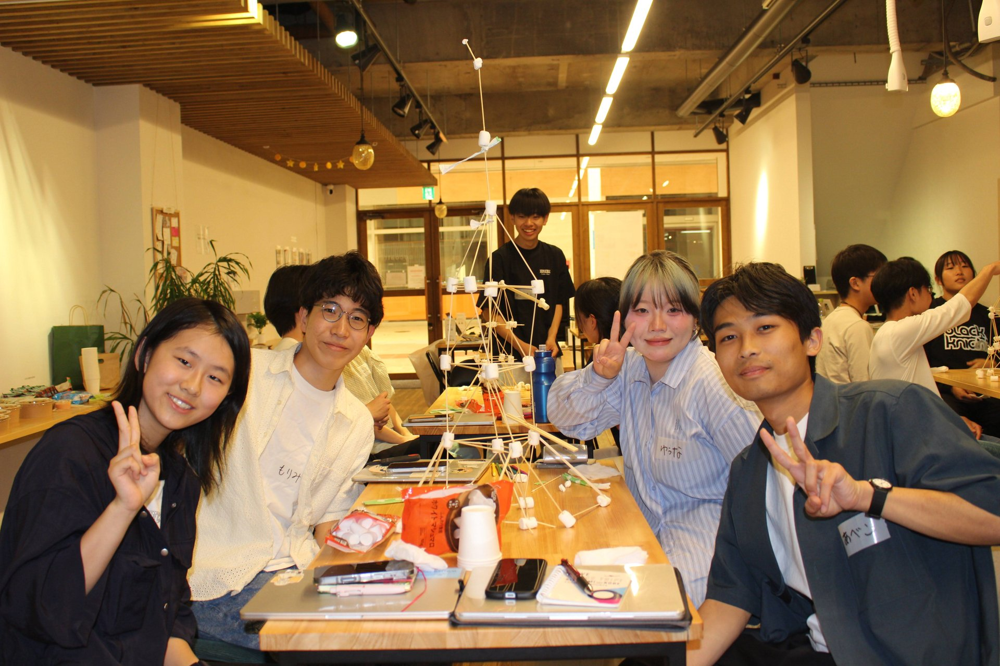
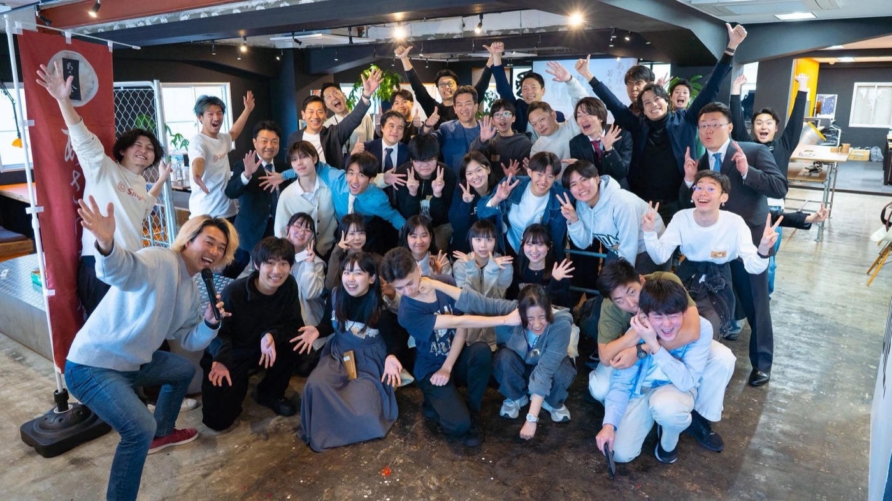
2026年4月3日、TOMAP株式会社様オフィスにて、第3回「あさげの若き情熱会」（あさげの会 通算第252回）を開催いたしました。
本会は、現役高校生20名と各業界の経営者をお招きし、朝一番から「はたらく意味」「今後のキャリア」「幸せとは」をテーマに、世代を越えてガチンコでディスカッションする場として企画したものです。
朝一番からのディスカッションにもかかわらず、高校生20名が「はたらく意味」「今後のキャリア」「幸せとは」といった大きなテーマに対し、自分の言葉で本気の問いと意見を経営者にぶつけ続けました。
「えっ、本当に高校生？」と思わず疑ってしまうほど、若い世代が自分の価値観を真っ直ぐに語る姿が印象的で、経営者の皆さまにとっても心が浄化される時間となりました。
会の途中ではサプライズで、元欧州チャンピオンのマジシャン DAI 氏が登場し、最高のパフォーマンスで会場を沸かせていただきました。
朝食には、TOMAP様オフィスの「働きがいと働きやすさのハイブリッド環境」の中で、彩り豊かなおむすびをご用意。世代を越えた対話が定刻ぎりぎりまで続きました。
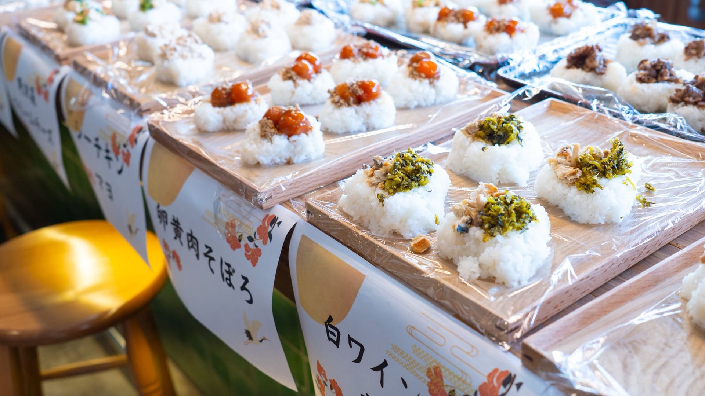
次回・第4回「あさげの若き情熱会」は、2026年夏休み期間中の開催を予定しております。応募多数の人気企画につき、ご参加希望の経営者様はお早めにお問い合わせください。
次世代のエースと、世代を越えて心が浄化される朝のひとときをぜひ体験してください。
ご参加いただいた経営者の皆さま、会場をご提供いただいた TOMAP 株式会社様、サプライズで会を盛り上げてくださったマジシャン DAI 様、そして全力で挑んでくれた高校生20名に、心より御礼申し上げます。
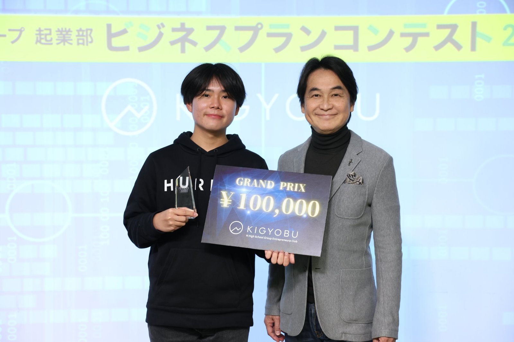
学生コミュニティNEXYの代表が、N高等学校 起業部主催のビジネスコンテスト2026において、1600人の参加者の中から優勝いたしました。
本コンテストは、全国のN高等学校の生徒を対象に実施されるビジネスコンテストであり、実際の事業アイデアをもとにプレゼンテーションが行われます。決勝では、すでに起業している高校生や、実際に事業を運営している参加者が多数いる中での審査となりました。
本コンテストでは、学生コミュニティ「NEXY」をテーマに発表を行いました。挑戦している学生同士が出会い、刺激し合い、次の挑戦へとつながる場としての価値を提案しました。
今回の優勝を一つの結果として、NEXYの取り組みをさらに拡張し、より多くの学生に価値を届けていきます。
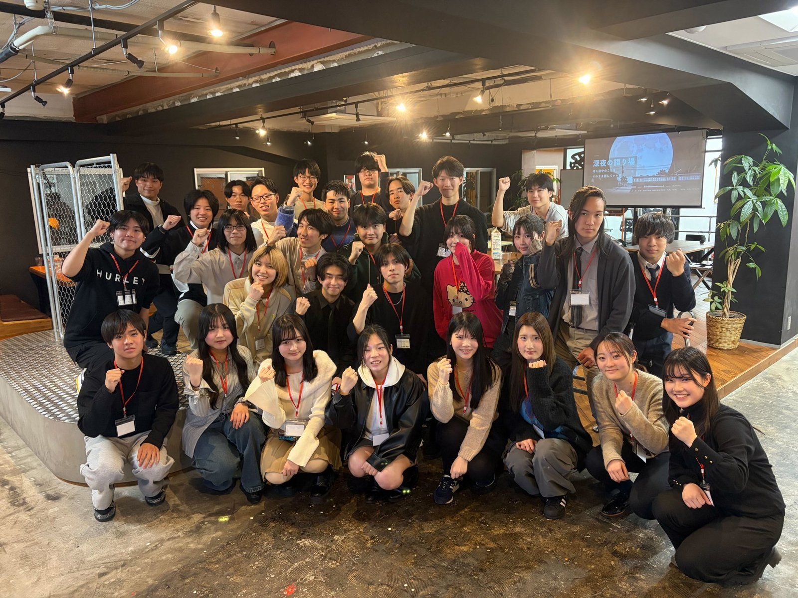
学生コミュニティNEXYとして、新たな取り組みである「深夜の語り場」第1回を開催いたしました。
「深夜の語り場」は、これからの日本を担う高校生・大学生が集まり、活動、悩み、葛藤、失敗、将来像などを、学生同士だからこそ本音で語り合う場です。
「大人には言えない」「同世代だからこそ分かる」——そんな空気の中で、互いに刺激し合い、新たな一歩につながる場を目指して企画しました。
推奨度：9.14 / 10
「どんな社会課題を解決したいか」「将来どんな世界をつくりたいか」「その裏でどんな悩みを抱えているか」——こうした会話が自然に生まれ、互いを尊重しながら刺激し合う空気が印象的でした。
また、事前にInstagramグループを作成したことで、参加前から関係性が生まれ、より深い対話につながりました。
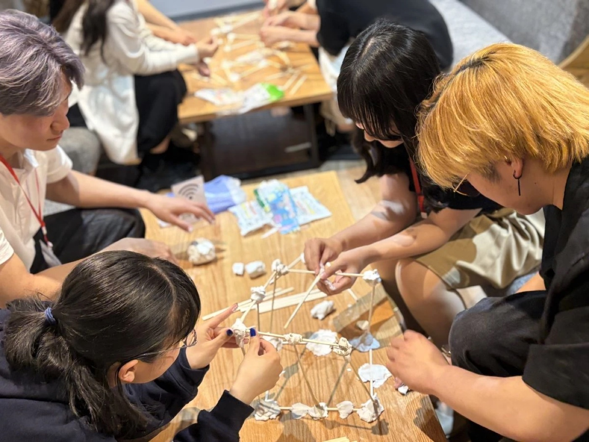
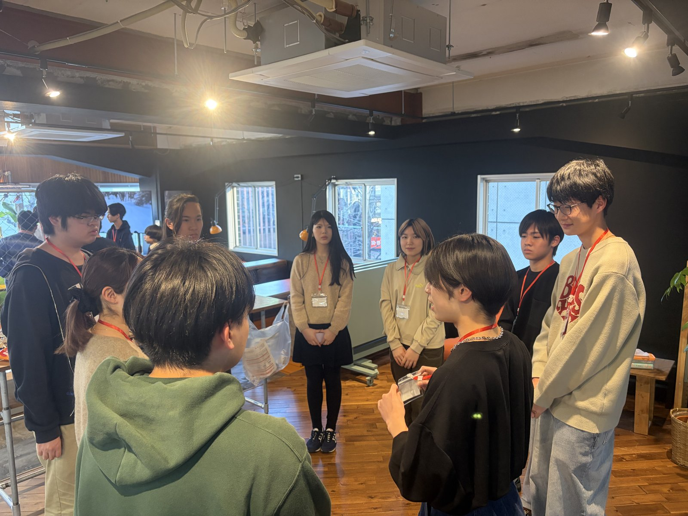
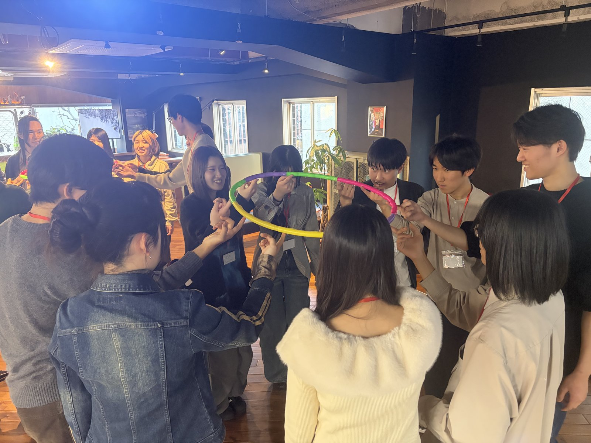
本取り組みは、「未来を創る学生の交差点」となる場として継続的に開催していきます。現在、次回開催に向けて土日にオフィスをご提供いただける企業様を募集しております。また、参加希望の学生の方からのご連絡もお待ちしております。